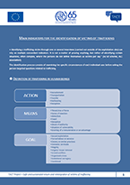
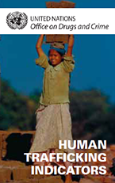
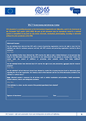
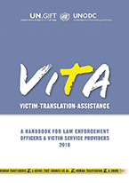
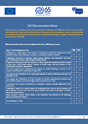
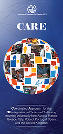
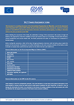
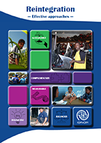

Main Human Trafficking indicators
Publisher: IOM France,2016
Languages available: English, French
Thematic: Identification
ABSTRACT:
This document encompasses key trafficking indicators which should enable frontline actors to refer the victim to specialized services for formal identification; and common misconceptions about trafficking that should be avoided.

Detailed trafficking indicators list
Publisher: UNODC, 2016
Languages available: English
Thematic: Identification
Download PDF
ABSTRACT:
This tool lists detailed indicators by type of exploitation, and with a focus on child trafficking.

Screening inteview form
Publisher: IOM France, 2016
Languages available: English
Thematic: Identification, risk & needs analysis, referral
Download PDF
ABSTRACT:
The Screening Interview Form is a document enabling relevant stakeholders to identify the beneficiary as a victim by gathering information related to the trafficking process. It should be completed by one person (case-worker) in coordination with partners in both countries of origin / destination.

Victim Translation Assistance Tool
Publisher: UN.GIFT, 2010
Languages available: Amharic, Arabic, Indonesian, Bulgarian, Czech, German, Edo language, Estonian, Greek, English, Spanish, Frasi, French, Hausa, Hindi, Italian, Hebrew, Kiswahili, Latvian, Lithuanian, Luganda, Hungarian, Mongolian, Nepalese, Chechen, Thaï, Pidgin, Polish, Portuguese, Romanian, Romani, Russian, Albanian, Slovak, Serbian, Filipino, Vietnamese, Turkish, Ukrainian, Chinese
Thematic: Identification, risk & needs analysis
Visit Website
ABSTRACT:
The VITA (Victim Assistance Translation) Tool is a unique new tool using audio messages, that allows law enforcement officials to provide a basic level of assistance to victims of human trafficking in their own language.

Risk assessment matrix
Publisher: IOM France, 2016
Languages available: English
Thematic: Risk & needs analysis
Download PDF
ABSTRACT:
This tool is used to map the risks related to a return to the CoO and the first needs of the victim. The risk and needs assessment should be performed jointly by partners involved in both the country of destination and in the country of origin.

Information leaflets for VoTs
Publisher: IOM France, 2015-2016
Languages available: English
Thematic: Referral
Download PDF
ABSTRACT:
The CARE and TACT leaflets can be used as examples to develop information materials for victims of trafficking willing to return to their country of origin. These leaflets are tools that should be used by professionals during discussions with the victim to help him/her make an informed decision.

Family assessment form
Publisher: IOM France, 20116
Languages available: English
Thematic: Referral
Download PDF
ABSTRACT:
In the case where an unaccompanied child victim of trafficking is willing to return and that the return option is validated during the best interest determination process, early coordination is requested. A family assessment should be undertaken in order to ensure that the family agrees and is able to receive the child. At the same time, the views of the child her-/himself are to be taken into account in all stages of the process.

Reintegration effective approaches
Publisher: IOM ,2015
Languages available: English
Thematic: Reintegration
Download PDF
ABSTRACT:
The document provides a snapshot of the current debate around reintegration and portrays various positions and practices that can support practitioners and academics in making further progress.
This project is funded by the EU Asylum, Migration and Integration Fund